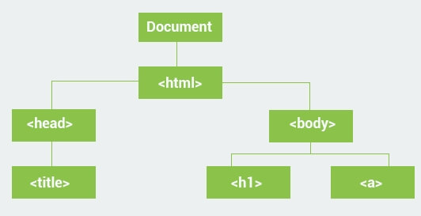

c++ 类型转换
Implicit conversion 隐式转换
当一个数据复制为兼容格式的类型时，隐式转换可以自动完成。
请看下面示例：
double a = 100.1;
int b;
b = a;
cout << b << endl;
//output:
//100当一个数据复制为兼容格式的类型时，隐式转换可以自动完成。
请看下面示例：
double a = 100.1;
int b;
b = a;
cout << b << endl;
//output:
//100V8 是 chrome 浏览器的 JavaScript Engine 名称，它是用来在 chrome 中获取和执行 JavaScript 代码的工具。V8 提供了一个 JavaScript 的运行环境，DOM 及其他 web API 是由 browser 提供的。
JavaScript Engine 是独立于其所寄生的浏览器的，这一特性才使 node.js 得以诞生。node.js 选择了 V8 Engine 且随着 node.js 的不断成长，大量服务端通过 JavaScript 编写的程序使用 v8 Engine。
基于 V8 同样可以创造桌面应用，例如 Electron 项目。
不同的浏览器有着各自的 Engine：
所有的 Engine 都遵守 ECMAScript 标准。
Node.js 是一个开源跨平台的 JavaScript 运行环境，它是时下最流行的工具，能够应用于几乎所有的项目。Node.js 运行 V8 JavaScript engine。它是 chrome 的核心，这让 Node.js 可以脱离浏览器运行 JavaScript 代码。
一个 Node.js app 运行在一个线程中，不会给每个 request 建立一个进程。Node.js 在其标准库中提供了一个 asynchronous I/O primitives 异步 IO 原生语法库来防止阻塞，同时 Node.js 中的库使用一种 non-blocking paradigms 无阻塞范式，将阻塞作为一种 exception 来处理。
当 Node.js 执行 IO 动作，例如读取文件，访问数据库等，不同于等待进程，占用 CPU 资源，Node.js 会在收到 request 响应后再去处理后续操作。这将使 Node.js 可以在一个 server 上同时处理上千条链接而不会引入大量的进程而导致 bug 出现。
Node.js 的另一大优势是使用 JavaScript 的前端开发者可以同时编写 server 端的代码而不用学习新的语言。
最新的 ECMAScript 标准可以在 Node.js 中使用，你不需要等待用户去更新浏览器。通过使用不同版本的 Node.js 来切换不同的 ECMAScript 标准。
ECMAScript (ES) 就是标准 JavaScript 的脚本语言规范。
它的第 6 个版本，开始被叫做 ECMAScript 6 (ES6) 然后改名为 ECMAScript 2015，为编写更加复杂的程序添加了很重要的新语法。包括了：classes and modules, iterators and for/of loops, generators, arrow functions, binary data, typed arrays, collections (maps, sets and weak maps), promises, number and math enhancements, reflection, and proxies。
ES6 是 ES5 的超集，ES6 现在非常流行，原因就是它引入了新的约定和 OOP 的概念，如：classes。下面我们介绍一些 ES6 中最核心的一些特性。
需要注意的是只有浏览器支持 ES6 的情况下才能够执行 ES6 指令，否则会报错。
当你打开一个网页，html 页面会被加载和渲染到屏幕上。为了完成这个过程，浏览器会建立这个页面的 Document Object Model 模型。也就是一个指向页面逻辑架构的 object。
一个页面的 DOM 可以被表示为一些嵌套的 boxes：

JavaScript 能够用来操作 DOM，动态的添加、删除、修改其中的元素。